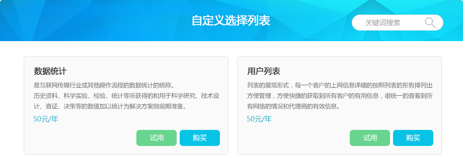

## index.html
<%inherit file="base.html" />

<%def name="timeNow()">${datetime.now().strftime('%Y-%m-%d')}</%def>

<div class="wrapper">
    <!--导航-->
    <%include file="nav.html" />
    <!--右侧功能栏-->
    <div class="projects">
        <div class="tabbox">
            <div class="bread">
                <h2>所有项目</h2>
                <div class="widget">
                    <%include file="button.html" />
                    <a href="javascript:;" class="btnBlueSmall" id="custom">自定义</a>
                </div>
            </div>
        </div>
        <div class="tabbox ns_total">
            <!--<span class="forkIco">X</span>-->
            <div class="toolnav">
                <h3>数据统计</h3>
            </div>
            <div class="areabox">
                <a href="/user.html" class="ns_onlines">
                    <i class="dataTotalIco"></i>
                    <span>在线人数：<em>${total.get('conns', '')}</em></span>
                </a>
                <a href="/ap.html" class="ns_ap">
                    <i class="dataHotsIco"></i>
                    <span>热点总数：<em>${total.get('onlines', '')}</em></span>
                </a>
                <a href="javascript:;" class="ns_apps" style="margin-right: 0;">
                    <i class="dataAppIco"></i>
                    <span>APP安装总数：<em></em></span>
                </a>
            </div>
        </div>
        <!--<div class="tabbox ns_charge">-->
            <!--<div class="toolnav">-->
                <!--<h3>计费统计</h3>-->
                <!--<div class="toolbox">-->
                    <!--<span class="chargeDate">2015-12-12</span>-->
                <!--</div>-->
            <!--</div>-->
            <!--<span class="forkIco">X</span>-->
            <!--<div class="areabox">-->
                <!--<ul>-->
                    <!--<li>-->
                        <!--<h6>在线缴费总额</h6>-->
                        <!--<a href="javascript:;"><span><em>1456</em>元</span></a>-->
                        <!--<div id="chartPieContent01"></div>-->
                    <!--</li>-->
                    <!--<li>-->
                        <!--<h6>昨日收入</h6>-->
                        <!--<a href="javascript:;"><span><em>1456</em>元</span></a>-->
                        <!--<div id="chartPieContent02"></div>-->
                    <!--</li>-->
                    <!--<li>-->
                        <!--<h6>今日收入</h6>-->
                        <!--<a href="javascript:;"><span><em>1456</em>元</span></a>-->
                        <!--<div id="chartPieContent03"></div>-->
                    <!--</li>-->
                <!--</ul>-->
            <!--</div>-->
            <!--<script type="text/javascript" src="/static/js/chartPie.js"></script>-->
        <!--</div>-->
        <!--<div class="tabbox ns_chart">-->
            <!--<div class="toolnav">-->
                <!--<h3>数据趋势图<i class="tipsIco"></i></h3>-->
            <!--</div>-->
            <!--<span class="forkIco">X</span>-->
            <!--<div class="areabox">-->
                <!--<div class="chartHead">-->
                    <!--<ul>-->
                        <!--&lt;!&ndash;<li><select class="sel"><option>在线人数</option><option>热点</option></select></li>&ndash;&gt;-->
                        <!--&lt;!&ndash;<li><span class="catLine"></span></li>&ndash;&gt;-->
                        <!--<li><select class="sel dateorhour"><option value="0">按小时查询</option><option value="1">按日期查询</option></select></li>-->
                        <!--<li><span class="catLine"></span></li>-->
                        <!--<li><span class="sel_date"><input type="text" id="datepicker" value="${timeNow()}" /></span><span class="sel_date"><input type="text" id="dateStart" value="${timeNow()}" readonly />至<input type="text" id="dateEnd" value="${timeNow()}" readonly /></span></li>-->
                    <!--</ul>-->
                    <!--<button type="button" id="cmpTime">刷新</button>-->
                <!--</div>-->
                <!--&lt;!&ndash; 为 ECharts 准备一个具备大小（宽高）的Dom &ndash;&gt;-->
                <!--<div id="chartLineContent"></div>-->
            <!--</div>-->
            <!--<script type="text/javascript" src="/static/js/chartLine.js"></script>-->
        <!--</div>-->
        <!--<div class="tabbox ns_drag">-->
            <!--<div class="toolnav">-->
                <!--<h3>平面图</h3>-->
            <!--</div>-->
            <!--<span class="forkIco">X</span>-->
            <!--<div class="areabox">-->
                <!--<div id="box">-->
                    <!--<div id="bar">-->
                        <!--<div id="square">-->
                            <!--<button type="button" id="AP001">AP001</button>-->
                            <!--<div>-->
                                <!--<a href="/projectuser.html?location=108" class="btnBlueSmall">连接</a>-->
                                <!--<a href="/projectsens.html?location=108" class="btnBlueSmall">感知</a>-->
                                <!--<a href="/projectuser.html?location=108" class="btnBlueSmall preventUrl">管理</a>-->
                            <!--</div>-->
                        <!--</div>-->
                    <!--</div>-->
                <!--</div>-->
            <!--</div>-->
        <!--</div>-->
        <div class="tabbox ns_prolist">
            <div class="toolnav">
                <h3>项目列表</h3>
                <!--<div class="toolbox">-->
                    <!--<span class="ns_sort">排序：<a href="javascript:;" class="on">按设备数</a> | <a href="javascript:;">按总在线数</a></span>-->
                <!--</div>-->
            </div>
            <!--<span class="forkIco">X</span>-->
            <div class="areabox">
                % if len(resources) > 2:
                % for r in resources:
                <a class="protab protabM" href="/projectcard.html?location=${r._location}">
                    <div class="tabimg"></div>
                    <div class="tabinfo">
                        <h6>${r.name}</h6>
                        <ul>
                            <li><span><label>运行：</label><em class="green">${r.onlines}</em></span><span><label>在线：</label><em>${r.conns}</em></span></li>
                            <li><span><label>故障：</label><em class="red">${r.offlines}</em></span><span><label>管理员：</label><em title="${r.owner}">${r.owner}</em></span></li>
                        </ul>
                        <p>开通日期：${r.ctime.strftime('%Y-%m-%d')}</p>
                    </div>
                </a>
                % endfor
                % else:
                % for r in resources:
                <a class="protab protabL" href="/projectcard.html?location=${r._location}">
                    <div class="tabimg"></div>
                    <div class="proL">
                        <h6>${r.name}</h6>
                        <p><label>管理员：</label><span style="font-size: 16px;">${r.owner}</span></p>
                        <p><label>开通日期：</label><span>2015-12-24</span></p>
                    </div>
                    <div class="proM"></div>
                    <ul class="proR">
                        <li><i class="xm_work"></i><div><span class="green">${r.onlines}</span><span>运行</span></div></li>
                        <li><i class="xm_online"></i><div><span class="black">${r.conns}</span><span>在线</span></div></li>
                        <li><i class="xm_unwork"></i><div><span class="red">${r.offlines}</span><span>故障</span></div></li>
                    </ul>
                </a>
                % endfor
                % endif
            </div>
        </div>
    </div>
</div>

<%block name="jscode">
    <script type="text/javascript" src="/static/js/lib/jqueryui.min.js"></script>
    <script src="/static/js/lib/chart/echarts-all.js"></script>
    <script type="text/javascript">
        $(function(){
            // 日期
            $("#dateStart").datepicker({
                dateFormat: 'yy-mm-dd',
                onClose: function(selectedDate) {
                    $("#dateEnd").datepicker("option", "minDate", selectedDate);
                }
            });
            $("#dateEnd").datepicker({
                dateFormat: 'yy-mm-dd',
                onClose: function(selectedDate) {
                    $("#dateStart").datepicker("option", "maxDate", selectedDate);
                }
            });
            $("#datepicker").datepicker({
                dateFormat: 'yy-mm-dd'
            });
            // drag
//            var oBox = document.getElementById("box");
//            var oBar = document.getElementById("bar");
//            startDrag(oBar, oBox);
        });
    </script>
</%block>

<%block name="aside">
    <!--<div class="ns_modal">-->
        <!--<div class="customAside">-->
            <!--<div class="customInner">-->
                <!--<h3>&#45;&#45; 自定义指标选择列表 &#45;&#45;</h3>-->
                <!--<div class="metric">-->
                    <!--<h4>数据统计</h4>-->
                    <!--<p>网络计费管理计费管理（Accounting Management）：主要跟踪和控制用户对网络资源的使用，并把有关信息存储在运行日志的数据库中，为收费提供依据。不同的系统对计费功能要求的详尽程度也不一样。在有些提供公共服务的网络中，要求收集的计费信息很详细、准确。例如要求对每一种网络资源、每一分钟的使用、传送的每一个字节数都要计费，或者要求把费用分摊给每一个账号、每一个项目、甚至每一个用户。</p>-->
                    <!--<div>付费 &#45;&#45; (50元/年)</div>-->
                    <!--<i class="uncheck check"></i>-->
                <!--</div>-->
                <!--<div class="metric">-->
                    <!--<h4>计费管理</h4>-->
                    <!--<p>网络计费管理计费管理（Accounting Management）：主要跟踪和控制用户对网络资源的使用，并把有关信息存储在运行日志的数据库中，为收费提供依据。不同的系统对计费功能要求的详尽程度也不一样。在有些提供公共服务的网络中，要求收集的计费信息很详细、准确。例如要求对每一种网络资源、每一分钟的使用、传送的每一个字节数都要计费，或者要求把费用分摊给每一个账号、每一个项目、甚至每一个用户。</p>-->
                    <!--<div>付费 &#45;&#45; (50元/年)</div>-->
                    <!--<i class="uncheck"></i>-->
                <!--</div>-->
                <!--<div class="metric">-->
                    <!--<h4>趋势图</h4>-->
                    <!--<p>网络计费管理计费管理（Accounting Management）：主要跟踪和控制用户对网络资源的使用，并把有关信息存储在运行日志的数据库中，为收费提供依据。不同的系统对计费功能要求的详尽程度也不一样。在有些提供公共服务的网络中，要求收集的计费信息很详细、准确。例如要求对每一种网络资源、每一分钟的使用、传送的每一个字节数都要计费，或者要求把费用分摊给每一个账号、每一个项目、甚至每一个用户。</p>-->
                    <!--<div>付费 &#45;&#45; (50元/年)</div>-->
                    <!--<i class="uncheck"></i>-->
                <!--</div>-->
                <!--<div class="metric">-->
                    <!--<h4>项目列表</h4>-->
                    <!--<p>网络计费管理计费管理（Accounting Management）：主要跟踪和控制用户对网络资源的使用，并把有关信息存储在运行日志的数据库中，为收费提供依据。不同的系统对计费功能要求的详尽程度也不一样。在有些提供公共服务的网络中，要求收集的计费信息很详细、准确。例如要求对每一种网络资源、每一分钟的使用、传送的每一个字节数都要计费，或者要求把费用分摊给每一个账号、每一个项目、甚至每一个用户。</p>-->
                    <!--<div class="free">免费</div>-->
                    <!--<i class="uncheck"></i>-->
                <!--</div>-->
                <!--<div class="tryout">-->
                    <!--<ul>-->
                        <!--<li>试用一周</li>-->
                        <!--<li class="on">去付款</li>-->
                    <!--</ul>-->
                    <!--<em>( * 注：所有付费指标，可免费试用一周 )  </em>-->
                <!--</div>-->
                <!--<input type="button" value="确定" class="btnBlue" />-->
            <!--</div>-->
            <!--<i class="modalClose"></i>-->
        <!--</div>-->
    <!--</div>-->
<div class="modal fade" id="modalCustom">
    <div class="modal_custom modal_body">
        
        
        
        <span class="closed">X</span>
    </div>
</div>
</%block>
